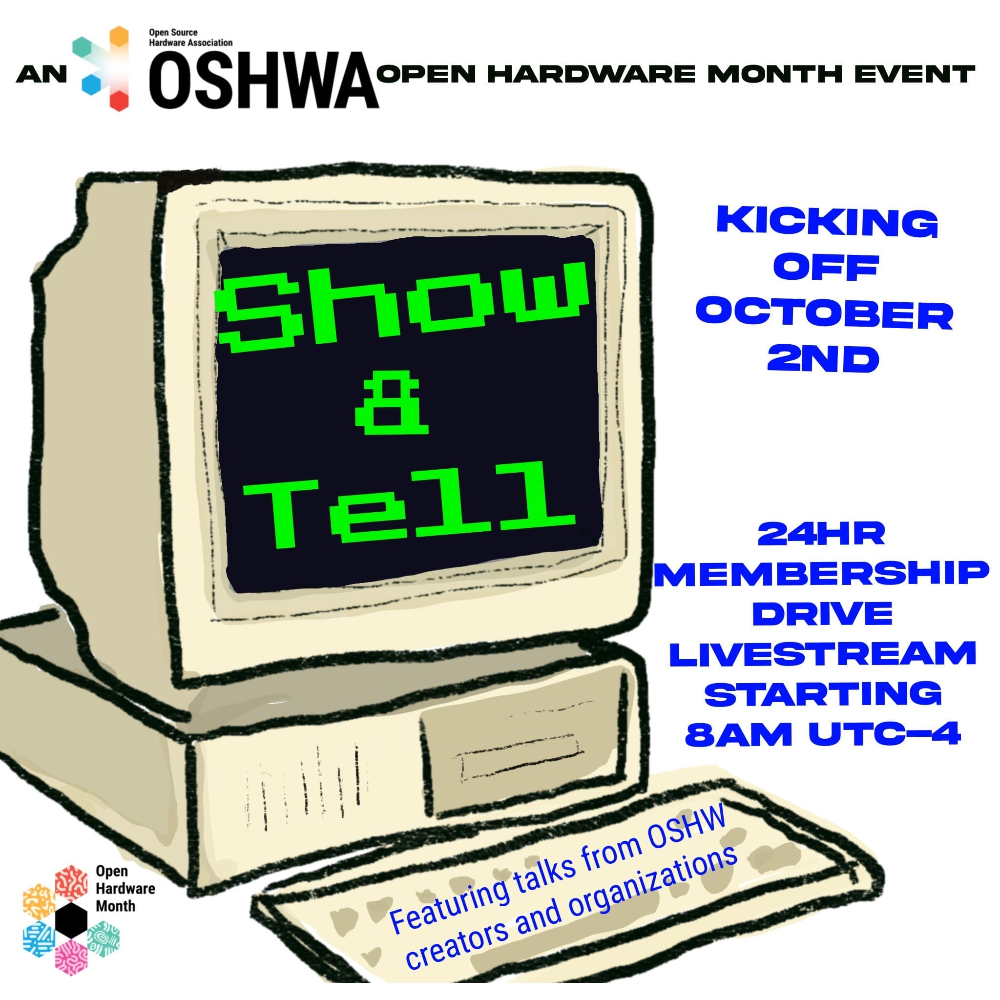
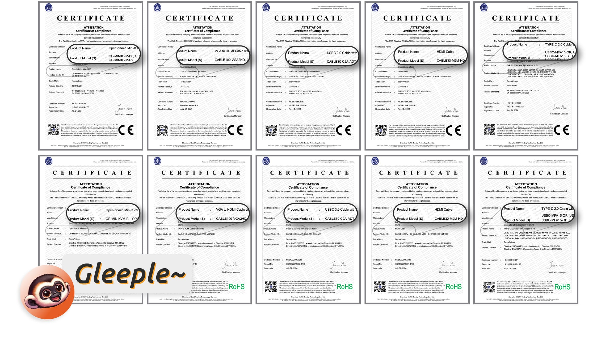

DIY 챌린지에 도전해 보세요! OSHWA의 Show & Tell에서 만나요!


안녕하세요, 여러분! 10월 2일 오후 10시 40분(EST)에 열리는 OSHWA의 Show & Tell에서 USB KVM DIY 챌린지 2024를 소개할 예정입니다. 관심 있으신 분들은 꼭 참여해 주세요! 감사합니다!

안녕하세요, 여러분! 10월 2일 오후 10시 40분(EST)에 열리는 OSHWA의 Show & Tell에서 USB KVM DIY 챌린지 2024를 소개할 예정입니다. 관심 있으신 분들은 꼭 참여해 주세요! 감사합니다!
안녕하세요, 여러분.
잘 지내고 계신가요? 마지막 업데이트 이후로 시간이 꽤 흘렀네요. Openterface의 모든 것이 순조롭게 진행되었다고 말씀드리고 싶지만, 몇 가지 문제로 인해 배송 일정이 지연될 예정입니다. 예상치 못한 일이었지만, 우리는 이러한 도전에 정면으로 맞서고 있으며, 좋은 소식도 많이 있습니다. 이 글은 약 7분 정도 소요되니, 현재 상황과 앞으로의 계획에 대해 자세히 알아보도록 하겠습니다.
생산을 시작하기 전에, CE 인증을 포함한 필요한 품질 테스트를 통과해야 했습니다. Mini-KVM뿐만 아니라 여러 액세서리가 포함된 툴킷 버전이기 때문에 각 부품마다 CE 테스트를 거쳐야 했습니다. 예상보다 시간이 더 걸렸지만, Mini-KVM과 모든 부품이 CE 인증을 통과했습니다! 아래는 모든 부품에 대한 인증 개요입니다: Mini-KVM, HDMI 케이블, 주황색 Type-C 케이블, 짧은 검은색 Type-C 케이블, VGA2HDMI 케이블. 인증을 받은 덕분에 생산 일정이 확정되었고, 현재 제조업체에서 모든 부품을 생산 중입니다.

우리 전자 제품의 경우 UKCA와 CE 요구 사항이 동일하며, CE는 RoHS 준수도 포함합니다.2주 전, 우리는 제조업체 중 한 곳을 방문하여 주황색 케이블의 품질 관리를 위해 라인 매니저들을 교육했습니다. 이제 모든 주황색 케이블이 생산되어 스튜디오 한쪽에 쌓여 있습니다.
 Kevin과 Shawn이 Openterface Mini-KVM과 주황색 케이블의 올바른 작동을 보장하기 위한 테스트 방법을 설명하고 있습니다.
Kevin과 Shawn이 Openterface Mini-KVM과 주황색 케이블의 올바른 작동을 보장하기 위한 테스트 방법을 설명하고 있습니다.
이번 주에는 다른 부품에 대해서도 동일한 작업을 수행하여 생산 전선에서 품질 관리를 교육할 예정입니다. 추가 케이블 샘플은 다음과 같습니다.
 TechxArtisan 로고가 자랑스럽게 새겨진 HDMI 케이블, 짧은 Type-C 케이블, VGA-to-HDMI 케이블 샘플입니다.
TechxArtisan 로고가 자랑스럽게 새겨진 HDMI 케이블, 짧은 Type-C 케이블, VGA-to-HDMI 케이블 샘플입니다.
제조업체로부터 다른 부품과 Mini-KVM이 곧 도착할 예정이며, 도착하면 모든 부품의 품질을 다시 확인하고 스튜디오에서 적절히 포장할 것입니다. 즉, 우리 팀이 직접 품질을 보장하여 여러분의 손에 도달할 것입니다.
현재 불확실한 부분은 배송 과정입니다. 여러 배송 회사를 조사한 결과, 창고를 통해 Crowd Supply의 창고로 배송하기 위해 시간이 더 걸릴 것으로 보입니다. 해상 운송과 항공 운송 중 어느 것을 선택할지 아직 논의 중이니 조금만 더 기다려 주세요.
통관 절차도 예상치 못한 지연을 초래할 수 있는 또 다른 장애물입니다. 제품이 미국의 Crowd Supply 창고에 도착하면 각 주문에 따라 전 세계로 배송하는 데 1~2주가 소요될 것입니다. 미국 외 지역의 후원자들은 개별 소포가 도착국의 글로벌 배송 및 통관 절차를 거쳐야 합니다.
현재 상황을 감안하고 여유 시간을 추가하여, 올해 말까지 배송을 완료할 수 있을 것으로 조심스럽게 낙관하고 있으며, 새로운 예상 도착일은 1월 중순입니다. 불편을 드려 정말 죄송하며, 이 변화 동안 여러분의 지원과 인내에 감사드립니다.
이전 Reddit 게시물에서 알 수 있듯이, 우리는 확장 핀이 포함된 V1.9 하드웨어로 업그레이드하기로 결정했습니다. 이는 크라우드펀딩 캠페인의 원래 계획에는 없었지만, 하드웨어의 더 넓은 사용 가능성을 크게 향상시킬 것이라고 믿습니다.
 VCC, GND, Target D+, Target D-, Host D+, Host D- 핀—여기서 'D'는 USB 데이터를 의미합니다.
VCC, GND, Target D+, Target D-, Host D+, Host D- 핀—여기서 'D'는 USB 데이터를 의미합니다.
주요 동기 중 하나는 소프트웨어 수준에서 USB 스위치를 전환할 수 있도록 하는 것이었습니다. 왜 이것이 중요한가요? 우리의 로드맵에는 KVM-over-IP 솔루션(예: VNC)을 지원하는 것이 목표입니다. 로컬 KVM 제어를 VNC 프로토콜과 일치시켜 사용자가 호스트 컴퓨터를 통해 원격으로 타겟 컴퓨터를 제어할 수 있도록 하는 것입니다. 이러한 원격 시나리오에서는 특히 호스트와 타겟 간의 파일 전송이 필요한 경우 사용자가 USB 포트를 전환할 수 있는 기능이 필수적입니다.
확장 핀은 또한 iPadOS 통합, ATX 제어, 네트워크 브리징 및 오디오 바이패스와 같은 더 많은 가능성을 열어줍니다. 여기서 모든 세부 사항을 다루지는 않겠지만, Openterface 커뮤니티에 가입하여 더 많은 논의를 나누시길 권장합니다.
이 하드웨어 업그레이드는 Openterface 솔루션이 IP를 통해 작동하고 더 고급 기능을 포함할 수 있도록 확장할 수 있으며, 여전히 플러그 앤 플레이 KVM-over-USB 도구로서의 핵심 강점을 유지할 수 있습니다. 이는 낯선 데이터 센터와 같은 불확실한 IT 환경을 탐색하는 IT 전문가에게 완벽합니다.
V1.9가 내부 기본 테스트를 통과했으며 모든 후원자에게 공식 버전으로 최종 확정될 것임을 기쁘게 보고합니다. 그러나 이 하드웨어 업그레이드는 추가 테스트가 필요하며, 이러한 확장 핀을 기반으로 한 모든 개발은 실험적이며 버그가 있을 가능성이 큽니다. 여기서 여러분의 도움이 필요합니다. 우리는 Openterface를 함께 개선하기 위해 오픈 소스 커뮤니티에 의존하고 있습니다.
소프트웨어 측면에서도 흥미로운 진전을 이루고 있습니다. Openterface Android 앱 개발에 착수했습니다! 부드러운 KVM 제어, 마우스 이동 및 클릭을 보여주는 초기 데모를 이 트윗에서 확인하세요. 더 많은 기능이 추가될 예정이며, 코드를 조금 더 다듬으면 이 앱도 GitHub 저장소 Openterface_Android에 오픈 소스로 공개할 것입니다.
 Android 태블릿에서 Linux 컴퓨터를 KVM 제어하는 모습. 멋지죠!
Android 태블릿에서 Linux 컴퓨터를 KVM 제어하는 모습. 멋지죠!
QT 버전도 유용한 업데이트를 받았습니다—이제 호스트에서 타겟으로 텍스트를 전송할 수 있습니다! 이제 이 기능은 macOS, Windows 및 Linux 호스트 앱에서 지원됩니다.
또한 재미있는 기능을 추가할 계획입니다—타겟 컴퓨터가 잠들지 않도록 자동 마우스 이동 기능입니다. 화면을 돌아다니는 핑퐁 공이나 클래식 DVD 스크린세이버 효과 중 어느 것을 선택할까요? 트윗에 투표하고 댓글을 남겨주세요 😃
여러 가지 모형과 패키지 디자인을 실험하여 여러 주요 요소 간의 완벽한 균형을 찾고 있습니다:
또한, 기존 툴킷 가방에 몇 가지 개선 사항을 추가했습니다:
이 재료는 예산 친화적이고, 촉감이 좋으며, 내부 물품을 보호할 만큼 내구성이 뛰어나기 때문에 선택했습니다. 여러분도 마음에 드실 거라 확신합니다.

알루미늄 케이스의 라벨도 정보성 있고 시각적으로 매력적으로 만들기 위해 업데이트하고 있습니다. 이러한 개선 사항이 사용자 경험을 향상시키고 Openterface를 더 쉽게 시작할 수 있도록 도와주기를 바랍니다.

Openterface 매뉴얼도 영어, 독일어, 프랑스어, 일본어, 중국어로 제공될 예정입니다. 여러분의 언어가 포함되지 않았다면 죄송합니다—우리 상자는 Doctor Who의 경찰 박스처럼 TARDIS 크기가 아닙니다! 하지만 웹사이트에 더 많은 번역을 추가하기 위해 최선을 다하겠습니다.

번역을 돕기 위해 ChatGPT를 사용하고 있지만, 때때로 문구와 표현이 부자연스러울 수 있습니다. 다른 언어로 된 인쇄물의 내용을 검토하는 데 도움을 주시면 대단히 감사하겠습니다. 포장에 대한 모든 텍스트 내용을 GitHub 폴더 product-printed-materials에 업데이트했으니, 검토하고 개선 사항을 제출해 주세요. 직접 메시지를 보내주셔도 됩니다. 감사합니다!
지연과 제품의 예상 도착일 변경에 대해 다시 한 번 사과드립니다. 여러분의 인내와 지지에 감사드리며, 가능한 한 빨리 제품을 전달하기 위해 열심히 노력하고 있습니다! 배송이 준비되면 즉시 업데이트하겠습니다. 더 많은 업데이트가 예정되어 있으니, Openterface 커뮤니티에 가입하고 계속 지켜봐 주세요!
감사합니다,
Billy Wang
프로젝트 매니저
Openterface 팀 | TechxArtisan
안녕하세요, 여러분!
크라우드펀딩 캠페인이 끝난 지 꽤 되었는데요, 오늘은 여러분께 멋진 소식을 전해드리려고 합니다. Openterface Mini-KVM의 생산 단계에 본격적으로 돌입했으며, 진행 상황을 계속 공유할 예정입니다.
먼저, 지난달 포틀랜드에서 열린 Teardown 2024 행사에 대해 이야기해볼까요? Crowd Supply가 주최한 이 행사는 정말 놀라웠습니다. 데모 테이블에서 많은 기술 친구들과 후원자들을 직접 만날 수 있어 기뻤습니다! 여러분의 따뜻한 격려와 응원에 큰 힘을 얻었습니다. 행사에서 찍은 사진 몇 장을 공유합니다:

Electromaker가 행사 중에 저희 제품을 소개해 주셔서 큰 감사의 인사를 전합니다! 이 영상에서 저희의 대화를 확인해 보세요:
현재 저희는 CH9329와 CH340 같은 부품과 칩을 주문하며 생산 준비에 한창입니다. 또한 Mini-KVM과 케이블을 CE, RoHS, UKCA 인증 테스트에 제출하고 있습니다. 모든 것이 순조롭게 진행된다면 곧 공장에서 생산을 시작할 수 있을 것입니다. 저희 팀은 생산 라인의 모든 단계가 원활하게 진행되어 재미있고 신뢰할 수 있는 최고 품질의 제품을 제공하기 위해 최선을 다하고 있습니다! 여기 RoHS와 CE 인증 테스트 보고서 사진을 공유합니다:

Mini-KVM과 다른 케이블들도 필요한 인증 기준을 충족하는지 확인하기 위해 비슷한 보고서를 계속 공유할 예정이니 기대해 주세요.
Openterface Mini-KVM이 공식적으로 OSHWA 인증을 받았다는 소식을 전하게 되어 기쁩니다! 🥳 인증 내용을 여기에서 확인할 수 있습니다: OSHWA UID CN000015. 저희는 소프트웨어와 하드웨어 모두를 오픈 소스로 유지하며, 기술 애호가들이 USB KVM의 잠재력을 탐구하고 개발에 기여하며 활기찬 커뮤니티를 함께 만들어 나가기를 바랍니다.

저희는 VCC, GND, Target D+, Target D-, Host D+, Host D-와 같은 추가 핀이 포함된 하드웨어 V1.9를 출시했습니다! 이 데이터 핀들은 타겟과 호스트의 USB 허브에 연결되어 있어 더욱 다양한 해킹이 가능합니다. Openterface를 이용해 ATX, 네트워크 브리징, 오디오 바이패스 등 다양한 확장을 DIY로 만들어 보세요. 이 핀들을 이용해 Mini-KVM을 어떻게 해킹할지 창의적인 아이디어가 있다면 Reddit이나 Discord에 공유하고 함께 코딩을 즐겨보세요!

저희는 Pi 환경에서 QT 호스트 앱을 성공적으로 실행했습니다! 더 흥미로운 것은 Mini-KVM이 Clockwork의 uConsole과 협력하여 휴대용 KVM 도구로 변신할 수 있다는 점입니다. 이는 플러그 앤 플레이와 주변의 헤드리스 장치 문제를 빠르게 해결하는 데 매우 유용합니다.
Kevin이 이끄는 개발팀은 코드를 테스트하고 정제하는 데 열심히 일하고 있습니다. Techxartisan의 Discord에 가입하여 개발팀과 베타팀과 함께 소식을 나누고 진행 상황을 확인하세요. 한편, Billy는 모든 서류 작업을 처리하고 제품, 포장 및 제품 설명서를 최종 디자인하고 있습니다.
Billy가 도쿄에서 Kazubu에게 공유한 알루미늄 케이스의 업데이트된 프린트와 라벨을 Kazubu의 트윗에서 확인해 보세요:

현재 저희는 일정에 맞춰 진행 중이며, 9월 말까지 Mini-KVM을 여러분의 손에 전달하기 위해 열심히 노력하고 있습니다.
Mini-KVM에 대해 더 많은 사람들에게 알릴 수 있도록 도와주시면 감사하겠습니다. 이 제품이 더 많은 기술 애호가들에게 도움이 되고, 헤드리스 장치를 관리하는 모든 사람의 기술 생활을 더 쉽게 만들어주기를 바랍니다.
여러분의 지원과 열정에 진심으로 감사드립니다. 여러분 없이는 이 모든 것이 불가능했을 것입니다!
감사합니다,
Billy Wang
Openterface 팀
안녕하세요, 여러분! 멋진 소식을 전해드리게 되어 기쁩니다!
먼저, 여러분의 엄청난 지원에 대해 진심으로 감사드립니다. 우리의 크라우드펀딩 캠페인은 6월 14일에 $248k를 달성하며 1110명 이상의 후원자와 Crowd Supply의 놀라운 지원 덕분에 목표를 초과 달성했습니다.

이 성공 덕분에 Mini-KVM을 더욱 개선할 수 있는 기회를 얻게 되었습니다! 여러분 없이는 불가능했을 것입니다—진심으로 감사드립니다! 🧡 우리는 여러분께 빠르게 제품을 전달하기 위해 생산에 전력을 다할 것입니다!
여기 재미있는 이야기가 있습니다: 이 게시물에서 언급했듯이, Kevin과 저는 내기를 했습니다. 마지막 36시간 동안 100명의 새로운 후원자를 얻으면, 제가 Crowd Supply의 Teardown 2024에 참석하기 위해 미국으로 비행하기로 했습니다. 놀랍게도, 우리는 100명을 넘어서 165명의 새로운 후원자를 얻었습니다! 그래서 이번 금요일(6월 21일)과 주말에 Teardown 2024에 직접 참석하게 되었다는 소식을 전하게 되어 매우 기쁩니다.
Teardown은 Crowd Supply의 연례 주요 행사로, 하드웨어와 관련된 모든 것을 중심으로 한 강연, 데모, 워크숍 등이 열립니다.
Teardown 2024 Lloyd Center Mall Portland, Oregon 2024년 6월 21-23일

저는 Teardown 행사에서 데모 테이블을 운영할 예정입니다: 여기에서 확인하세요!
혹시 포틀랜드 근처에 계신가요? 행사에서 여러분을 만날 수 있다면 정말 좋겠습니다! Teardown 티켓을 지금 구매하시고, 꼭 와서 인사해 주세요!
행사에 참석하지 못하더라도 걱정하지 마세요. 컨퍼런스 동안 Discord와 Subreddit에서 저를 만날 수 있습니다. 실시간으로 저와 대화하거나 텍스트를 주고받을 수 있으며, 데모 테이블에서 3일 동안 라이브 스트리밍을 할 예정이니, 지금 커뮤니티에 가입하시면 놓치지 않으실 겁니다.
이제 재미있는 소식입니다: Teardown 2024에서 비디오 게임 대회를 열 예정입니다. Mini-KVM이 휴대용 컴퓨터인 uConsole과 어떻게 작동하는지 시연할 것입니다. 이는 기본적으로 라즈베리 파이입니다. Mini-KVM과 함께 설정하는 방법을 보려면 제 X 트윗을 여기에서 확인하세요.

Pac-Man, The King of Fighters '97, Tetris와 같은 게임을 사용할 생각입니다. 그리고 여기서 중요한 점은—우승자에게는 Mini-KVM을 바로 드립니다! 그러니 저와 함께 게임을 즐기고 Mini-KVM을 받아가세요!
항상 흥미로운 것들을 준비하고 있으며, Teardown에서 매우 흥미로운 발표를 할 예정입니다! 더 많은 업데이트를 기대해 주세요. Teardown 2024에서 여러분을 만나기를 기대합니다!
감사합니다,
Billy Wang
Openterface 팀 | TechxArtisan Studio
안녕하세요, 여러분!
저희 Discord 채널에서 베타 팀의 흥미로운 업데이트를 공유하고 싶습니다! Openterface Mini-KVM이 기술 현장에서 멋지게 작동하고 있으며, 이를 보여주는 멋진 사진들이 있습니다. 확인해 보시고 왜 이렇게 화제가 되는지 직접 보세요!


시간이 얼마 남지 않았습니다! Crowd Supply에서 Openterface Mini-KVM을 $79 - $99의 저렴한 가격에 후원할 수 있는 마지막 기회를 놓치지 마세요. 캠페인은 2024년 6월 13일 오후 4시 59분 PDT에 종료되며, 이후 제품이 성숙해짐에 따라 가격이 인상될 예정입니다. 지금 바로 이 기회를 잡으세요!
많은 분들이 Crowd Supply 메인 페이지에서 보셨듯이, 다가오는 Teardown 2024 이벤트가 많은 기대를 모으고 있습니다. 저는 직접 참석하여 멋진 후원자 여러분을 만날 수 있기를 고대하고 있습니다!
여기 저희 팀에서 진행 중인 재미있는 내기가 있습니다:
현재 저희 프로젝트에는 약 950명의 후원자가 있습니다. 저희 기술 이사인 Kevin Peng과 저는 내기를 했습니다. 만약 마지막 시간에 100명의 추가 후원자를 얻는다면, 포틀랜드로 가는 제 여행 경비는 스튜디오에서 부담하게 됩니다. 그렇지 않으면, 제 개인 비용으로 부담해야 하며, 이는 몇 천 달러가 될 것입니다!
그래서 Openterface Mini-KVM의 모든 구독자와 새로운 친구들에게 이 마지막 시간을 함께 해주실 것을 부탁드립니다. 1050명 이상의 후원자를 달성하고 이 여행을 성사시킵시다!
가장 중요한 것은, 저희 캠페인이 곧 종료된다는 소식을 널리 알려주시는 것입니다. 저희는 이 유용한 장치를 만들고 최고 품질로 여러분께 전달하기 위해 최선을 다하고 있습니다.
지난 8개월 동안 이 프로젝트에 온 마음을 쏟았습니다. 아래 업데이트에서 저희의 모든 노력을 확인하고, 저희 서브레딧 r/Openterface_miniKVM에서 저희의 역사적인 게시물을 확인해 보세요:
Openterface Mini-KVM 크라우드펀딩 캠페인 시작! 2024년 4월 30일
자주 묻는 질문 2024년 5월 11일
VGA-to-HDMI 케이블이 이제 유럽 후원자들에게 제공됩니다 (그리고 길이는 1미터입니다!) 2024년 5월 16일
개발에서 여러분의 손으로: 비하인드 스토리 2024년 5월 28일
MAKE: 매거진의 David Groom과의 캐주얼 채팅: Openterface Mini-KVM의 이야기 🎙️ 2024년 5월 31일
에픽 업데이트 & 마지막 주 - Mini-KVM 후원의 마지막 기회! 2024년 6월 8일
이 마지막 몇 시간 동안 저희를 후원해 주세요! 감사합니다!
Billy Wang
프로젝트 매니저
Openterface 팀
안녕하세요, 여러분!
시간이 정말 빨리 지나가네요! Openterface Mini-KVM의 Crowd Supply 크라우드펀딩 캠페인이 이제 마지막 주에 접어들었습니다. 흥미로운 업데이트를 함께 살펴보시죠!
환상적인 소식이 있습니다 – 이제 mini-KVM이 macOS, Windows, 그리고 Linux를 지원합니다! 게다가, 모두 오픈 소스입니다!
🎉 각 시스템에 대한 자세한 내용은 아래를 확인하세요:


하드웨어 저장소에 큰 업그레이드를 했습니다! 이제 데이터시트, 3D 모델, BOM, 회로도 등 모든 것이 포함되어 있습니다 – 우리의 기기를 직접 다뤄보세요.

하드웨어 저장소를 확인하세요: Openterface_Mini-KVM_Hardware
경험이 풍부한 전문가든 이제 막 시작하는 초보자든, 여러분의 피드백과 기발한 제안을 기다립니다! 메이커 여러분, 우리의 mini-KVM을 처음부터 만들어보세요! 코드를 수정하고, 자신만의 것으로 만들어서 우리에게 보여주세요!

기억하시나요? 스타일리시한 오렌지 Type-C 케이블 부드러운 실리콘 느낌이 나는 케이블 샘플을 받았습니다! 이 케이블은 240W 고속 충전(전압 DC50V, 전류 5A, 전력 240W)을 지원하며, mini-KVM과 완벽하게 작동합니다. 이 모든 것을 가능하게 해준 제조업체와 후원자 여러분께 큰 감사를 드립니다!

1.5m Type-C 케이블과 1m 길이의 VGA-to-HDMI 케이블 업데이트를 위한 새로운 편리한 어댑터가 포함된 툴킷 가방의 크기를 16 cm L x 10 cm W x 3.8 cm H로 늘려 더 많은 공간을 제공합니다!

다양한 디자인의 외부 포장 상자를 실험 중입니다 – 컬러풀, 회색, 검정 등. 컬러풀한 디자인으로 기울고 있지만, 여러분의 피드백을 원합니다!

베타 팀에게 보낸 베타 툴킷의 자세한 내용을 여기에서 확인하세요. 여러분의 의견을 알려주세요! 참고로, 이 포장 디자인은 최종 버전이 아닙니다. 상자 크기를 조정하고 CE 마크와 같은 필수 정보를 추가해야 할 수도 있습니다.
캠페인의 마지막 주입니다. 지금 후원하여 Openterface Mini-KVM을 저렴한 가격에 얻으세요. 캠페인 후 가격은 제품이 성숙해짐에 따라 상승할 가능성이 높습니다. 놓치지 마세요 – 지금 행동하세요!
사기 크라우드펀딩 프로젝트에 대한 회의를 이해합니다. 우리가 신뢰할 수 있는 이유는 다음과 같습니다:
Crowd Supply를 신뢰하세요: 2012년부터 Crowd Supply는 전자 제품을 위한 선도적인 플랫폼으로, 후원자의 권리를 보호하고, 우리의 개발을 면밀히 감독하며, 여러분을 위해 최적의 제품을 만들 수 있도록 전문적인 조언을 제공하고 있습니다.
우리 팀을 신뢰하세요: IoT, AI, 기술 예술 분야에서 6년 이상의 경험을 보유하고 있습니다. TechxArtisan Studio 웹사이트에서 더 많은 정보를 확인하세요.
우리 문화를 신뢰하세요: 기술적 우수성과 사용자 경험에 중점을 두고, 오픈 소스 협업을 수용합니다. Reddit r/Openterface_miniKVM과 Discord TechxArtisan 커뮤니티에서 초기 프로토타입부터 현재의 사전 생산 버전까지의 여정을 확인하세요.
아직 확신이 서지 않으셔도 괜찮습니다! Openterface Mini-KVM이 결국 여러분을 사로잡을 것이라고 믿습니다.
항상 흥미로운 것을 준비하고 있으니 조금만 기다려 주세요! 궁금한 점이 있으면 커뮤니티에서 함께 하거나 이메일(info@techxartisan.com)로 연락 주세요. 계속 지켜봐 주시고, 여러분의 지원에 감사드립니다! 😄
감사합니다,
Openterface 팀 | TechxArtisan Studio
안녕하세요, 여러분!
우리는 방금 MAKE: 매거진의 David Groom과 함께한 멋진 YouTube 라이브 스트림을 마쳤습니다! 이 세션 동안 우리는 Openterface Mini-KVM의 탄생 배경에 대해 깊이 있게 이야기했습니다. 이 혁신적인 오픈 소스 하드웨어 솔루션은 노트북만으로 헤드리스 장치와 라즈베리 파이 같은 싱글 보드 컴퓨터를 쉽게 제어할 수 있도록 설계되었습니다. 자세한 내용은 YouTube 라이브 스트림을 확인하시거나 아래 이야기를 읽어보세요.

Mini-KVM의 여정은 중국 광저우에 위치한 우리 TechxArtisan 스튜디오에서 시작되었습니다. 지난 5년 동안 우리는 지역 및 국제 예술가들을 위한 다양한 기술 예술 프로젝트에 깊이 관여해 왔습니다. 우리의 작업에는 AI 감지 기능이 있는 인터랙티브 조명 설치, 극장 공연을 위한 로봇 팔, 무작위 미로를 해결하는 자율 주행 미니카, 사막과 숲 같은 무인지대를 탐험하는 로봇 개 등이 포함됩니다.

우리 작업에서 반복적으로 발생하는 문제는 모니터, 키보드 또는 네트워크 연결이 없는 라즈베리 파이와 제트슨 나노 같은 헤드리스 컴퓨터를 관리하는 것이었습니다. 이는 종종 예비 모니터와 키보드를 찾기 위해 분주하게 돌아다니는 상황을 초래했습니다.
처음에는 배터리 팩으로 구동되는 임시 휴대용 모니터 솔루션과 터치패드가 있는 무선 미니 키보드를 사용했습니다. 그러나 이러한 장치는 종종 잊어버리거나 잘못 두게 되어, 우리가 항상 코딩과 설정을 위해 가지고 다니는 노트북을 활용할 수 있는 전용 하드웨어 솔루션이 필요하게 되었습니다.
 현장 프로젝트를 위해 반드시 휴대해야 하는 두 가지 장치.
현장 프로젝트를 위해 반드시 휴대해야 하는 두 가지 장치.
우리의 첫 번째 DIY 프로토타입은 헤드리스 장치에서 비디오를 가져오기 위한 캡처 카드와 USB 키보드/마우스 시뮬레이터를 결합한 간단하지만 효과적인 솔루션이었습니다. 이 모든 것이 노트북에 연결되는 단일 USB 케이블에 통합되었습니다.
 초기 버전의 mini-KVM PCB 중 하나
초기 버전의 mini-KVM PCB 중 하나
우리는 2023년 11월에 열린 선전 메이커 페어에서 우리의 멋진 기술 예술 프로젝트를 선보였고, mini-KVM 프로토타입을 David에게 보여주려고 했습니다. 그러나 David가 준 선물에 너무 흥분한 나머지 그것을 잊어버렸습니다!
 MAKE: 매거진에서 받은 스티커와 엽서는 정말 멋져요!
MAKE: 매거진에서 받은 스티커와 엽서는 정말 멋져요!
Reddit에 우리의 프로토타입을 공유한 후, 우리는 커뮤니티로부터 귀중한 피드백을 받았고, 이를 통해 우리의 솔루션을 정제하고 완성된 제품으로 개발할 수 있었습니다. 이 커뮤니티의 지원은 우리의 임시 장치를 홈랩 사용자, 시스템 관리자, 기술 애호가 및 헤드리스 컴퓨터를 사용하는 모든 사람을 위한 세련되고 효율적인 도구로 변모시키는 데 중요한 역할을 했습니다.
 홈랩 사용자들로부터 엄청난 피드백을 받았습니다.
홈랩 사용자들로부터 엄청난 피드백을 받았습니다.
기존의 유사한 솔루션과 경쟁할 수 있을지에 대한 초기 의심에도 불구하고, 온라인 커뮤니티로부터 받은 긍정적인 반응과 건설적인 제안은 잠재적인 사용 사례를 명확히 하는 데 도움이 되었고 우리의 자신감을 높였습니다. 이러한 지원과 우리의 노력을 인정받지 못했다면, 우리는 이 프로젝트를 더 이상 진행하지 않았을 것입니다.
Openterface Mini-KVM의 Crowd Supply 크라우드펀딩 캠페인은 큰 호응을 얻고 있으며, 약 2주가 남았습니다. 이 캠페인은 Mini-KVM을 개발하는 것뿐만 아니라, 커뮤니티 주도의 혁신의 힘을 증명하는 것입니다. 다음 단계로는 생산 관리, 소프트웨어 개선, 그리고 이 유용한 장치를 멋진 후원자들에게 전달하는 작업이 있습니다. 이 모든 것은 우리의 놀라운 오픈 소스 커뮤니티의 힘으로 이루어집니다.
 베타 테스터들이 TechxArtisan의 Discord에서 Openterface Mini-KVM을 일상적인 기술 작업에 사용하는 모습을 공유하고 있습니다.
베타 테스터들이 TechxArtisan의 Discord에서 Openterface Mini-KVM을 일상적인 기술 작업에 사용하는 모습을 공유하고 있습니다.
Openterface Mini-KVM은 우리의 창의성과 인내심, 그리고 지원해주는 오픈 소스 커뮤니티의 증거입니다. 개인적인 문제를 해결하기 위한 간단한 솔루션으로 시작된 것이 이제는 해커, 기술 애호가, 그리고 전 세계의 기술 애호가들에게 혜택을 줄 수 있는 다재다능한 오픈 소스 도구로 발전했습니다. Mini-KVM이 공식 출시로 다가가는 동안 더 많은 업데이트를 기대해 주세요!
안녕하세요, 여러분!
크라우드펀딩 여정에 대한 또 다른 업데이트를 가지고 돌아왔습니다. 이번에는 정말 흥미로운 소식을 전해드리려고 합니다!
먼저, 저희가 원래 목표의 1100%를 달성했다는 놀라운 소식을 전해드리게 되어 매우 기쁩니다! 여러분 한 분 한 분의 지원에 진심으로 감사드립니다. 여러분의 지원은 정말 대단합니다!
저희는 이미 생산 준비로 매우 바쁜 시간을 보내고 있습니다! 이번 주에는 기술의 중심지인 선전(Shenzhen)을 방문하여 최고의 기술 제조업체 중 하나를 둘러볼 기회를 가졌습니다. 이 업체는 Meta, ABB, Blaupunkt와 같은 대기업들과 협력하고 있으며, 그들의 첨단 생산 라인과 품질 관리 기계를 직접 볼 수 있어 놀라웠습니다. 더 많은 사진을 공유하고 싶지만, 기밀 유지를 위해 디지털 모자이크 처리를 한 사진을 하나 공유합니다.

(생산 라인 매니저와 품질 관리를 논의 중입니다.)
이 파트너십에 대해 매우 긍정적인 느낌을 받고 있으며, 기술 스타트업인 저희를 지원하려는 그들의 열정에 감사드립니다. 저희는 제조 단계가 최상의 헌신과 품질로 처리될 수 있도록 최선을 다하고 있으며, 곧 여러분의 손에 제품을 전달할 수 있도록 노력하고 있습니다! 다음은 공장 입구에서 저희 핵심 팀 멤버들의 사진입니다:

(왼쪽부터: Shawn, Billy, Kevin, Vileer.)
저희는 항상 개선을 위해 노력하고 있으며, 추가 액세서리인 VGA-to-HDMI 케이블이 이제 1미터 길이로 업그레이드되었고, 품질도 향상되었습니다. 자세한 내용은 이전 2주차 업데이트에서 확인할 수 있습니다.
다음으로, 저희는 1.5미터 길이의 Type-C 케이블을 호스트 컴퓨터에 연결하기 위해 검토 중입니다. Type-C는 새로운 컴퓨터, 노트북, 심지어 서버에서도 점점 더 많이 사용되고 있습니다. 여러 제조업체를 테스트한 결과, 저희 품질 기준을 충족하는 멋진 오렌지색 Type-C 케이블을 생산할 수 있는 제조업체를 찾았습니다.
현재, 호스트 컴퓨터에 USB-A 포트만 있는 경우 추가 Type-C-to-USB-A 어댑터가 필요합니다.

이것이 약간 번거로울 수 있다는 것을 알고 있기 때문에, 저희는 Type-C-to-USB-A 어댑터가 통합된 개선된 제품을 만들기 위해 제조업체와 긴밀히 협력하고 있습니다. 다음은 그 모형입니다.

이 스타일리시한 오렌지색 케이블은 부드러운 실리콘 느낌과 1.5미터 길이를 자랑하며, 양쪽 끝에 Type-C 커넥터가 있고 한쪽 끝을 Type-C에서 USB-A로 변환하는 어댑터가 포함되어 있습니다. 이 제품은 시장에 존재하지 않으며, 저희의 맞춤형 OEM 생산이 필요합니다. 저희는 이 솔루션을 후원자들을 위한 최종 툴킷 패키지에 포함시키기 위해 노력하고 있지만, 아직 비용을 계산 중입니다! 이를 실현하기 위해서는 생산 비용을 줄이기 위해 더 많은 지원이 필요합니다. 현재 크라우드펀딩 수치와 생산 비용을 고려할 때, 이 맞춤형 Type-C 케이블을 만드는 것이 점점 더 가능해지고 있습니다. Openterface 커뮤니티에서 진행 상황을 계속 업데이트하겠습니다!
여러분께서도 저희 프로젝트가 유망하다고 생각하시고 Mini-KVM이 여러분의 기술 생활을 더 쉽게 만들어 줄 것이라고 믿으신다면, 저희를 후원하고 친구들에게도 알려주세요. 제품을 더욱 개선하면서도 모든 사람에게 경제적으로 제공할 수 있도록 함께 노력합시다! 감사합니다!
개발 초기 단계에서는 여전히 버그와 변경 사항이 발생할 수 있으니 양해 부탁드립니다. 이럴 때 저희 베타 팀이 큰 역할을 합니다! 저희는 이미 두 번의 베타 테스트를 조직했습니다. 자세한 내용은 아래 게시물을 확인하세요:
위 게시물에서 보시다시피, 1차와 2차 라운드에서 많은 훌륭한 신청서를 받았고, 제한된 자리 때문에 후보를 좁히는 것이 정말 어려웠습니다!
저희 베타 팀은 미국 🇺🇸, 영국 🇬🇧, 일본 🇯🇵, 독일 🇩🇪, 체코 🇨🇿, 노르웨이 🇳🇴, 벨기에 🇧🇪, 프랑스 🇫🇷, 오스트리아 🇦🇹, 호주 🇦🇺, 폴란드 🇵🇱, 네덜란드 🇳🇱, 중국 🇨🇳 등 다양한 국가에서 참여하는 뛰어난 글로벌 협력 팀입니다. 이 테스트 팀은 개발 경험, Openterface Mini-KVM의 실제 사용 사례, 오픈 소스 프로젝트 지원에 대한 열정을 가지고 있습니다. 베타 팀은 이미 이 유용한 장치를 일상 업무에 사용하며 문제를 제기하고 기능을 제안하여 저희가 더욱 개선할 수 있도록 돕고 있습니다.
비록 대부분의 여러분이 이 초기 버전의 mini-KVM을 가지고 있지 않더라도, GitHub에서 저희 코드를 검토하고 커뮤니티에서 베타 및 개발 팀과 대화에 참여할 수 있습니다! 여러분의 의견을 알려주시면 이 장치를 함께 멋지게 만들 수 있습니다!
다음은 저희 오픈 소스 GitHub 저장소에 대한 업데이트입니다:
저희 Openterface MacOS 호스트 앱은 이미 Apple App Store에 공식적으로 출시되었습니다. 'Openterface' 또는 'mini-KVM'을 검색하여 앱 페이지를 찾을 수 있습니다. 더 나아가, 전체 코드를 GitHub 저장소에 업로드했습니다: Openterface_MacOS for the Mini-KVM. 이 기본 작동 데모를 MacOS에서 확인할 수 있습니다.

QT는 저희가 사랑하는 다용도 프레임워크로, 저희 mini-KVM을 기반으로 구축했습니다. Windows 버전에 대한 초기 데모 비디오를 여기에서 확인할 수 있습니다. 데모에서 보시다시피, 낮은 지연 시간과 안정적인 연결로 훌륭하게 작동합니다! 초기 베타 앱을 해당 GitHub 저장소에서 찾고 다운로드할 수 있습니다.


Linux 기반 시스템의 경우, 특히 Raspberry Pi를 위한 ARM32, ARM64, ARMv7, ARMv8과 같은 다양한 아키텍처에 대한 패키징은 상당한 도전 과제입니다(패키징을 위해 몇 시간씩 기다려야 합니다). 하지만 저희는 이를 위해 노력하고 있으며, 곧 Linux 데모를 기대할 수 있습니다. 아마도 일주일 내로 가능할 것입니다.
이제 저희는 Openterface_QT의 모든 최신 코드를 GitHub에 업로드했습니다! 살펴보시고, 초기 개발 단계이므로 여전히 많은 개선이 필요하다는 점을 이해해 주세요. 개발자라면 저희와 함께 해주세요. 즐거운 코딩 되세요!
저희는 Android와 WebExtension에 대한 개념 증명을 완료했습니다. 이들은 macOS, Windows, Linux보다 우선순위가 낮지만, 여전히 진행 중입니다. 초기 연구에 따르면, Openterface_Android 프로젝트는 ChromeOS도 지원할 수 있습니다. 의견이 있으시면 토론에 참여해 주세요!
저희는 Apple의 모바일 시스템인 iPadOS와의 호환성도 탐구하고 있습니다. Apple의 엄격한 통제 때문에 이러한 플랫폼이 타사 장치와의 유선 연결을 지원하지 않을 수 있지만, 특히 M 시리즈 칩이 장착된 iPad를 위한 잠재적인 해결책을 조사하고 있습니다. 저희 베타 팀원 Seb이 이미 흥미로운 발견을 했으며, 이는 더 탐구할 가치가 있지만 아직 확정된 것은 없습니다. 의견이나 제안이 있으시면 커뮤니티에 참여하여 함께 논의해 봅시다!

저희는 앞으로 2~3주 동안 하드웨어 세부 사항을 점진적으로 공개할 예정입니다. 또한, 오픈 소스 하드웨어 협회(OSHWA) 인증 요구 사항을 준수할 계획입니다.
그동안, 저희 하드웨어에 대해 더 알고 싶다면 데이터시트와 작동 원리를 확인해 보세요. 이 페이지에서는 CH9329 칩을 사용한 USB-HDMI 캡처 통합에 대해 설명합니다. 기술 애호가들은 이 칩에 대한 세부 사항을 특히 흥미롭게 여길 것입니다. 또한, 저희 mini-KVM은 CH340 칩을 사용하여 호스트와 타겟 측 모두에 두 개의 내장 USB 허브를 지원합니다. 저희 mini-KVM은 현재 시장에 나와 있는 많은 비디오 캡처 카드와 비교할 만합니다.
저희는 소프트웨어와 하드웨어를 모두 오픈 소스로 만드는 과정에 열심히 일하고 있습니다. 좋은 것은 시간이 걸리기 마련입니다! 커뮤니티 내에서 이 진행 상황에 대해 계속 업데이트하겠습니다. 인내심과 이해에 감사드리며, 계속 지켜봐 주세요!
사기성 크라우드펀딩 프로젝트가 많다는 점에서 일부 사람들이 회의적일 수 있다는 점을 이해합니다. 저희 크라우드펀딩 프로젝트에 대해 안심할 수 있는 몇 가지 포인트를 알려드리겠습니다:
Crowd Supply 플랫폼을 신뢰하세요: 이 플랫폼은 2012년부터 미국에서 전자 제품을 위한 최고의 크라우드펀딩 플랫폼 중 하나입니다. Crowd Supply 팀은 Openterface Mini-KVM의 개발 진행 상황을 면밀히 감독하고 있으며, 여러분을 위해 저희가 만드는 것이 정확히 맞는지 확인하기 위해 전문적인 조언을 제공하고 있습니다. Crowd Supply 팀에게도 감사의 인사를 전합니다! 또한, Crowd Supply 플랫폼에서 후원자의 권리가 어떻게 보호되는지, 저희 프로젝트에 대한 자세한 내용을 읽어보실 수 있습니다: Crowd Supply 가이드: 후원자는 어떻게 보호되나요? > "Crowd Supply를 통해 자금을 받은 모든 프로젝트는 후원자에게 전달되었거나(또는 전달될 예정입니다). 여러분은 누군가의 허황된 꿈에 자금을 지원하는 것이 아닙니다; Crowd Supply에서는 실제 제품을 구매하는 것입니다."
저희 팀의 경험을 신뢰하세요: 저희는 하드웨어와 소프트웨어 개발을 모두 포함하는 작업에서 특히 숙련된 다재다능한 개발자, 숙련된 제작자, 경험 많은 프로젝트 및 생산 관리자들로 구성된 팀입니다. 저희는 IoT, AI, 엣지 컴퓨팅, 기술 예술 분야에서 6년 이상의 경험을 가진 혁신적인 기술 창작 스튜디오입니다. 저희에 대해 더 알고 싶다면 TechxArtisan Studio 웹사이트를 확인해 보세요.
저희 팀의 문화를 신뢰하세요: 저희 팀은 기술적 우수성뿐만 아니라 전체 사용자 경험에도 헌신하고 있습니다. 여기에는 사용자 및 개발자 문서화부터 디자인 미학까지 모든 것이 포함됩니다. 저희는 최첨단 기술에 열정을 가지고 있으며, 다양한 관점에서 새로운 발전에 대해 활발히 토론합니다. 이러한 토론은 뛰어난 전자 제품을 정의하고 팀워크를 통해 이를 실현하는 방법을 결정하는 데 도움이 됩니다. 이 협력적인 접근 방식은 저희 제품이 사용자 경험을 향상시키고 품질과 세부 사항에 대한 헌신을 보여줍니다. 또한, 저희는 오픈 소스와 커뮤니티 협업 문화를 수용합니다.
저희가 달성한 것과 하고 있는 일을 지켜보세요: 저희는 이 프로젝트에 매우 열심히 일하고 있습니다. Reddit 및 Discord 커뮤니티에 참여하여 초기 프로토타입부터 현재의 사전 생산 버전까지 저희가 제작한 것을 확인하고, 최신 진행 상황을 확인할 수 있습니다. 저희 커뮤니티에 참여하여 저희와 소통해 주세요!
저희와 직접 대화하세요: Mini-KVM에 대해 궁금한 점이나 우려 사항이 있으시면 info@techxartisan.com으로 이메일을 보내주세요. 또한, 저희는 MAKE: Magazine의 David Groom이 주최하는 라이브 스트리밍을 29일 수요일에 계획하고 있습니다. Openterface Mini-KVM과 그 뒤에 숨겨진 이야기에 대해 논의할 예정입니다. 나중에 커뮤니티 페이지에 동영상을 게시할 것입니다.
마지막으로, 여전히 확신이 서지 않으셔도 괜찮습니다. 괜찮아요! 여러분의 작업이 헤드리스 장치 관리를 포함한다면, 저희가 Openterface Mini-KVM을 제작하는 노력이 결국 여러분을 설득할 것이라고 확신합니다. 기다려 주세요! 😄
다음 주 업데이트를 기대해 주세요. 호스트 애플리케이션 기능, 로드맵, 생산 진행 상황, 베타 팀이 공유한 실제 사용 사례 등에 대해 더 자세히 다룰 예정입니다! 그동안, 저희 웹사이트 Openterface와 FAQs를 확인하고, Crowd Supply에서 저희를 후원하고, 소문을 퍼뜨려 주세요!
읽어주셔서 감사드리며, 이 여정에 함께해 주셔서 감사합니다! 평화!
프로젝트 매니저, Billy Wang
Openterface 팀 | TechxArtisan Studio
Openterface Mini-KVM의 크라우드펀딩 캠페인이 드디어 시작되었습니다! 이 기능이 풍부하고 오픈 소스 기반의 커뮤니티 주도형 장치는 헤드리스 컴퓨터를 제어하고 상호작용하는 방식을 간소화합니다.
이 장치는 추가 키보드, 마우스, 모니터 또는 네트워크 설정이 필요 없는 컴팩트하고 가벼우며 빠른 KVM-over-USB 솔루션을 제공합니다. 노트북이나 데스크탑 컴퓨터에서 직접 헤드리스 컴퓨터를 제어하여 설정을 간소화하고 작업 효율성을 높일 수 있습니다.
우리와 함께 기술 생활을 더 쉽게 만들어 보세요!

Openterface Mini-KVM은 다양한 사용자와 상황에 완벽한 동반자입니다:

Openterface Mini-KVM의 개발은 우리의 도전과 커뮤니티의 요구에서 시작되었습니다. TechxArtisan 스튜디오에서 멋진 기술 예술 프로젝트와 야외 IoT 솔루션을 개발하면서, 우리는 종종 불안정한 네트워크 환경에서 추가 장비 없이 장치를 관리해야 하는 딜레마에 직면했습니다. 동료들과의 대화와 커뮤니티의 피드백을 통해, 우리는 이러한 필요를 직접적으로 해결하고 헤드리스 장치를 신뢰성 있게 제어할 수 있는 장치를 만들기로 결심했습니다.
다양한 KVM 솔루션이 있지만, 왜 Openterface Mini-KVM을 선택해야 할까요? 그 이유는 다음과 같습니다:
컴팩트하고 효율적: IT 전문가와 애호가 모두를 위해 설계된 우리의 KVM-over-USB 솔루션은 네트워크 접근이 제한되거나 없는 환경에서 휴대 가능하고 네트워크 독립적인 빠른 문제 해결 도구로 빛을 발합니다.
경제성: 우리는 Openterface Mini-KVM을 더 저렴하게 만들기 위해 노력했으며, 이 필수 도구가 작업이나 취미 프로젝트에 필요한 모든 사람에게 도달할 수 있도록 했습니다.
커뮤니티 주도 및 오픈 소스: Openterface Mini-KVM의 핵심은 혁신과 협업의 커뮤니티를 육성하는 것입니다. 오픈 소스 가치를 수용함으로써, 사용자들이 맞춤형 기능과 개선 사항을 기여하여 도구의 기능과 다양성을 풍부하게 만들 수 있도록 초대합니다.
최신 개발 소식을 받고, 기술 지원을 받으며, 다른 사용자들과 연결되기 위해, Crowd Supply의 Pre-Launch 페이지를 방문하고, openterface.com 웹사이트를 탐색하며, 우리 서브레딧 r/Openterface_miniKVM과 Discord 커뮤니티 TechxArtisan에 가입하세요.
이 흥미로운 여정을 함께 시작하고 헤드리스 장치를 제어하는 방식을 혁신해 봅시다. Openterface Mini-KVM을 현실로 만드는 여정에 동참해 주세요!
감사합니다!